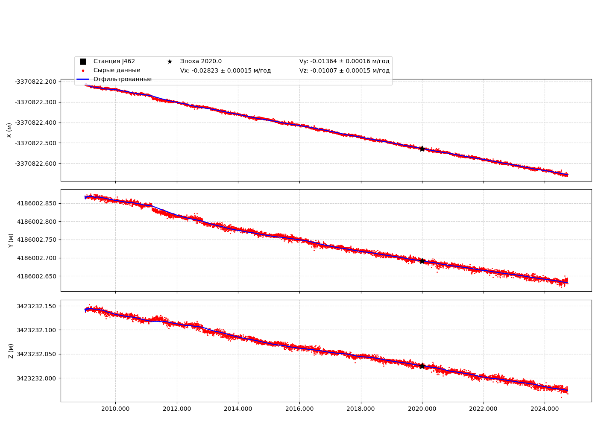

📍 Станция J462
Координаты (на эпоху 2020.0)
Широта: 32.669°
Долгота: 128.843°
Высота: 150.825 м
X_2020: -3370822.528
Y_2020: 4186002.691
Z_2020: 3423232.025
Файл txyz2
Скачать J462.txyz2
Графики координат XYZ

Интерактивный график координат
🔎 Открыть интерактивный график